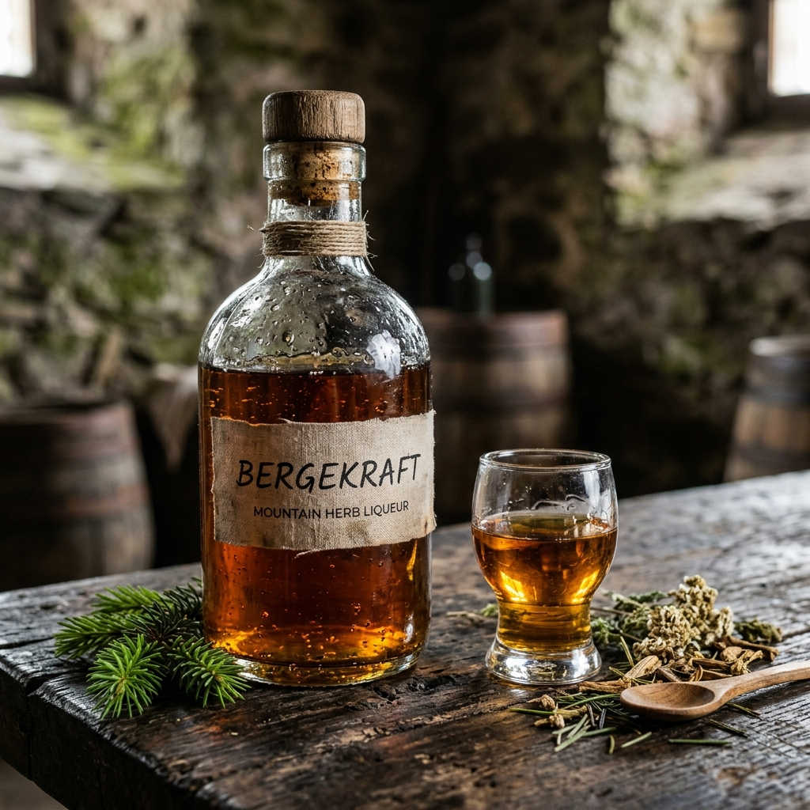
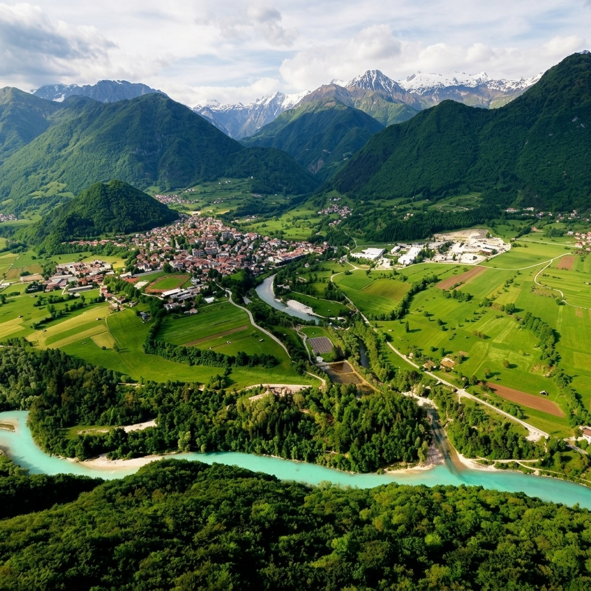

Tolminska Dežela · Est. 1816
Tradicija · Narava · Mojstrstvo
Prava mera – življenska modrost.
Srk ob pravem času – zdravje in krepost.


Ta spletna stran vsebuje informacije o alkoholnih pijačah.
Za vstop morate biti stari 18 let ali več.